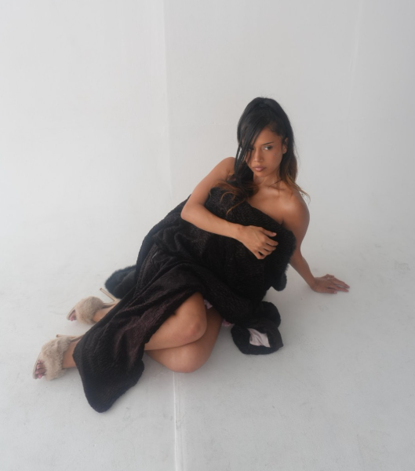

2026 is the New 2016

Have you noticed how your FYP has basically turned into a 2016 time capsule lately? where everyone is suddenly romanticizing 2016 like it was the peak of human civilization. We are collectively so over the hyper polished, sterile energy of the last few years. The whole "2026 is the new 2016" movement is a massive, collective middle finger to that suffocating perfection. We are desperately craving that free, playful, completely unbothered vibe where people actually enjoyed the moment instead of trying to monetize it. Think about it: 2016 was that golden era of peak Snapchat filters, the Mannequin Challenge, and everyone blasting The Weeknd's Starboy on loop. There was this raw, chaotic, low stakes energy to the internet and to life back then, where we posted blurry photos with ugly filters just because we were having fun, not because we were trying to build a personal brand. In 2026, we are fiercely hijacking that exact energy because we just want to breathe, laugh, and be messy again.
And you can see this exact vibe shift happening loudest in our closets, because fashion is finally becoming fun again! We are officially burying the boring, minimalist rules and bringing back the loud, unapologetic color palettes that defined a decade ago. Getting dressed in 2026 isn't about blending into some corporate mood board or trying to look "expensive" for the algorithm. It’s about being vibrant, taking risks, and matching the high energy, feel good pop beats of the mid 2010s. We’re injecting that vibrant, sunny, festival season optimism back into our everyday style because, let’s be real, life is too short to dress like a walking cloud of beige neutrality.
The best part about this whole revival is that it’s deeply rooted in dressing original and just playing around with statement pieces. Instead of everyone looking like identical clones fresh off an influencer trip, people are using fashion to show personality again. We are unironically digging out the dramatic bomber jackets, the chunky stacked chokers, the velvet textures, and the slinky off the shoulder tops, but we’re styling them with a total IDGAF attitude. It’s all about mixing and matching pieces that make you smile, throwing on a crazy accessory just because it feels right, and treating your outfit like a playground rather than a uniform. By bringing back the colorful, chaotic spirit of 2016, we aren't trying to build a literal time machine we’re just reclaiming our right to have a good time, dress weird, and actually enjoy the moment we’re living in.